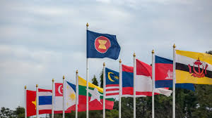
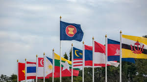

Main Content
Sebagai salah satu pendiri ASEAN, Indonesia selalu mengedepankan perdamaian, stabilitas dan penyelesaian konflik secara damai di kawasan.
A. Mediator konflik
Keahlian diplomasi dan peran netral Indonesia dihormati dan di akui di kawasan karena Indonesia memiliki sejarah panjang dalam memediasi konflik antar negara anggota ASEAN.
B. Penjaga perdamaian dan stabilitas
Indonesia berkontribusi aktif dalam menjaga perdamaian dan stabilitas di kawasan melalui berbagai mekanisme ASEAN. Kontribusi ini termasuk partisipasi dalam misi penjaga perdamaian PBB dan kegiatan pemeliharaan perdamaian lain nya.
C. Basis produksi dan investasi menarik
Dengan sumber daya alam Indonesia yang melimpah dan populasi besar. Indonesia menjadi tujuan investasi menarik bagi perusahaan multinasional. Berbagai sektor industri (manufaktur, maritim dan pariwisata) terus berkembang di Indonesia, membuka lapangan pekerjaan dan mendorong pertumbuhan ekonomi regional
D. Promotor demokrasi dan HAM
Indonesia mendorong penegakan demokrasi dan hak asasi manusia di kawasan ASEAN melalui berbagai deklaradi dan pedoman regional.